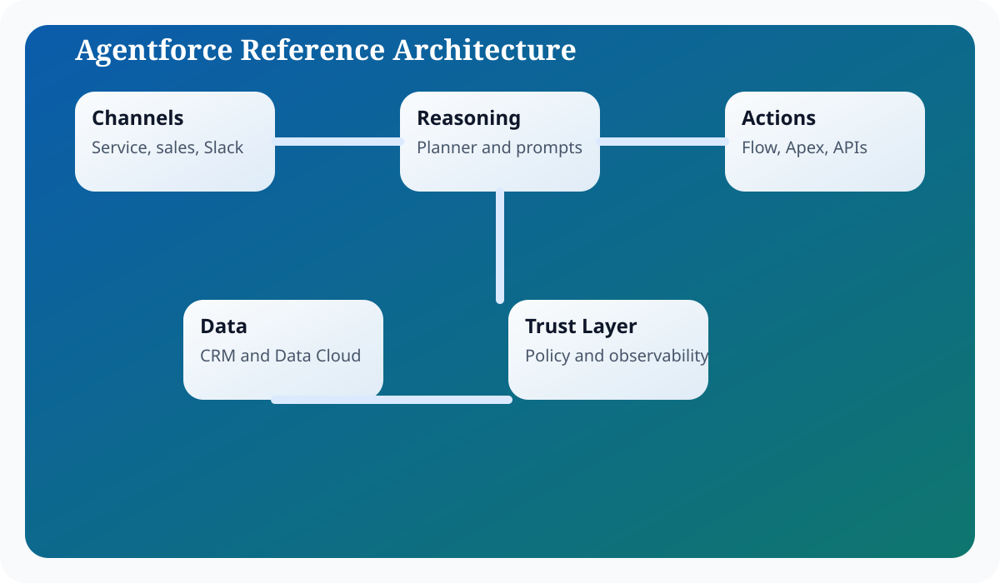

Introduction
Salesforce Agentforce matters because enterprise teams do not need another isolated chatbot; they need an execution surface that can reason over business context, stay inside platform controls, and complete work across Salesforce workflows. In practical terms, that means combining language understanding with CRM records, metadata, automation, and operational policy. The most useful framing is to treat Agentforce as an orchestration layer sitting between human intent and governed business actions.
For architects, admins, and developers, the design question is not whether an LLM can produce fluent output. The harder question is how you bound that output with trusted data, deterministic automations, explicit approvals, and observability. This guide focuses on the implementation tradeoffs, runtime boundaries, and delivery decisions that shape integrations work in Agentforce. That is why successful Agentforce implementations start from architecture, identity, and process design before they focus on polished conversational experiences.
A strong Integrations implementation usually follows the same pattern: define the business objective, identify the records and actions the agent can use, design prompts that encode policy and tone, expose actions through Flow or Apex, and then measure outcomes with operational telemetry. This pattern keeps the solution explainable and creates a handoff model that admins, architects, developers, and service leaders can all understand.
Architecture explanation
External integrations shift the architecture from purely in-platform automation to distributed systems. Once the agent depends on outside APIs, latency, retry behavior, contract versioning, and partial failure become first-class concerns.
Integrating Agentforce with External APIs typically breaks into five layers. The experience layer receives user requests from channels such as Service Console, Experience Cloud, or Slack. The reasoning layer interprets the request, selects the right prompt, and coordinates the next step. The grounding layer retrieves trusted data from CRM objects, knowledge articles, Data Cloud, or approved documents. The action layer executes Flow, Apex, or API operations. The governance layer enforces trust controls such as permission boundaries, audit logs, and response quality checks.
These layers are useful because they help teams decide where a problem belongs. If the answer is wrong, the issue may sit in grounding. If the action is unsafe, the problem sits in permissions or execution validation. If the result is verbose or inconsistent, the issue is often in prompting or output schema. Separating the architecture this way keeps debugging concrete, which is essential when an implementation grows across multiple teams.

In enterprise delivery, it also helps to think about control planes versus data planes. The control plane contains metadata, prompts, access policy, model selection, testing, and release procedures. The data plane contains the live customer conversation, retrieved records, outbound actions, and operational telemetry. This distinction prevents teams from mixing authoring concerns with runtime concerns and makes promotion across sandboxes significantly easier.
The most reliable Agentforce implementations keep the model responsible for reasoning and language, while deterministic platform services remain responsible for data integrity, approvals, and side effects.
Step-by-step configuration
Configuration work succeeds when the team treats Agentforce setup as a sequence of platform decisions rather than a single wizard. The steps below reflect the order that keeps dependencies visible and avoids rework later in the release.
- Choose the integration pattern: direct callout from Apex, Flow with External Services, or middleware for more complex orchestration.
- Configure named credentials and external credentials so secrets stay outside prompts and code.
- Define a stable request and response contract, including timeout behavior and error categories.
- Implement transformation logic that turns model intent into deterministic API parameters.
- Create retries and fallbacks for recoverable failures, while avoiding duplicate side effects.
- Expose the integration as a controlled agent action with clear usage boundaries in the prompt.
- Instrument latency, error rate, and downstream impact before scaling the integration to more users.
Once external APIs enter the design, service-level objectives need to include partner dependencies. If the agent response depends on a 4-second API with a 2 percent error rate, users will feel that behavior immediately. A resilient integration posture is therefore part of the conversational experience.
Code examples
Enterprise teams need concrete implementation patterns because agent behavior eventually resolves into platform metadata and code. The examples below are representative patterns you can adapt inside a sandbox before promoting them through your normal release process.
Named credential callout example
public with sharing class ShippingStatusService {
public class ShipmentStatus {
@AuraEnabled public String trackingNumber;
@AuraEnabled public String status;
@AuraEnabled public String lastUpdated;
}
@InvocableMethod(label='Get shipment status')
public static List<ShipmentStatus> getStatus(List<String> trackingNumbers) {
List<ShipmentStatus> results = new List<ShipmentStatus>();
for (String trackingNumber : trackingNumbers) {
HttpRequest req = new HttpRequest();
req.setEndpoint('callout:Logistics_API/v1/shipments/' + EncodingUtil.urlEncode(trackingNumber, 'UTF-8'));
req.setMethod('GET');
req.setTimeout(5000);
HttpResponse res = new Http().send(req);
if (res.getStatusCode() == 200) {
results.add((ShipmentStatus) JSON.deserialize(res.getBody(), ShipmentStatus.class));
}
}
return results;
}
}Flow-style response mapping
{
"action": "getShipmentStatus",
"inputs": {
"trackingNumber": "{!Case.Tracking_Number__c}"
},
"responseMap": {
"status": "$.status",
"lastUpdated": "$.lastUpdated"
}
}Operating model and delivery guidance
Agentforce projects become easier to sustain when the delivery model is explicit. Administrators typically own prompt authoring, channel setup, and low-code automations. Developers own custom actions, advanced integrations, and test harnesses. Architects own the capability boundary, trust assumptions, and release model. Service or sales operations leaders own business acceptance and the definition of success.
That separation matters because long-term quality depends on ownership. If everyone can tune everything, nobody can explain why behavior changed. If prompts, flows, and actions are versioned with release notes, then a regression can be traced back to a concrete modification. This is the same discipline teams already apply to code; Agentforce just expands the surface area that needs that discipline.
It is also useful to define an evidence loop. Capture representative transcripts, measure action success rate, compare containment against downstream business metrics, and review edge cases at a fixed cadence. Over time, this evidence loop becomes more valuable than intuition. It tells you whether a prompt change improved quality, whether a new action reduced manual effort, and whether an escalation rule is too sensitive or too lax.
Teams should also decide how documentation, enablement, and support ownership work after launch. A static runbook for incident handling, a changelog for prompt revisions, and a named owner for every high-impact action are simple controls that prevent ambiguity when the agent starts operating at scale.
Best practices
- Use named credentials instead of hard-coded endpoints or secrets.
- Normalize downstream errors into categories the agent can handle.
- Make action prompts clear about what the external system can and cannot do.
- Protect against duplicate submissions with idempotency patterns.
- Measure latency because model orchestration magnifies slow integrations.
Conclusion
External APIs expand what Agentforce can do, but they also expose the agent to the realities of distributed systems. Use clear contracts, secure credentials, defensive retries, and observability from day one. When integration design is disciplined, the agent can coordinate work beyond Salesforce without losing trust.
For Salesforce teams, the practical lesson is consistent: start from business flow, ground the model on trusted enterprise context, expose only the actions you can govern, and measure what the agent actually changes in production. That is how Agentforce becomes a durable platform capability instead of a short-lived proof of concept.